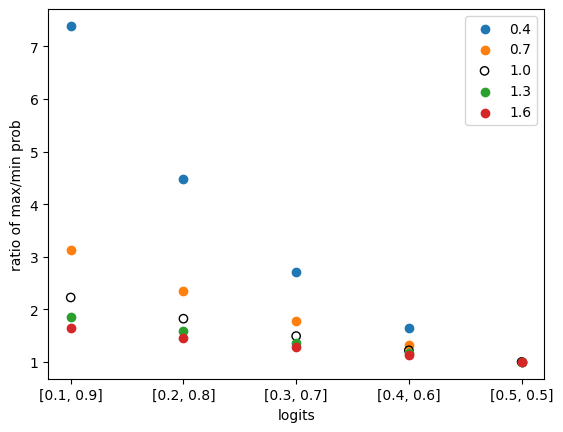

TL;DR OpenAI’s ChatGPT provides the range and meaning of various parameters in its official documentation (https://platform.openai.com/docs/api-reference/chat/create). We will discuss ChatGPT’s generation process and how these parameters implement its generation effects.
ChatGPT’s Decoding Process
We assume minGPT (equivalent to GPT-2) and ChatGPT have the same decoding process: https://github.com/karpathy/minGPT/blob/master/mingpt/model.py#LL283C12-L283C12.
The overall process can be summarized as the following steps:
- Expand the user’s request from 1 to a batch size of num_samples
- Perform model inference to obtain logits
- Perform temperature mapping: logits = logits / temperature
- [Optional] Perform topk processing: logits = topk_func(logits, top_k)
- Map logits to probabilities: probs = softmax(logits)
- Whether to sample:
- Sample: idx_next = multinomial_sample(probs, num_samples=1)
- Don’t sample: idx_next = topk_func(probs, k=1)
- Repeat the above process max_new_tokens times
Decoding Parameters of ChatGPT
temperature
The official definition of the temperature parameter is:
temperature number Optional Defaults to 1
What sampling temperature to use, between 0 and 2. Higher values like 0.8 will make the output more random, while lower values like 0.2 will make it more focused and deterministic.
We generally recommend altering this or
top_pbut not both.
This corresponds to step 3 of the decoding process.
Below we will demonstrate its effect with example data combined with the model decoding process (to simplify the logic, we will not perform topk processing):
- Assume the vocabulary size of a model is 2. At some point, the model output is logits = [0.8, 0.2].
- If no temperature mapping is performed (equivalent to setting temperature to 1, which is also the default value): Probability conversion: probs = softmax(logits) = [0.65, 0.35]
- If temperature is set to 1.8, then logits = logits / temperature = [0.44, 0.11], next step is probability conversion: probs = softmax(logits) = [0.58, 0.42]
- If temperature is set to 0.2, then logits = logits / temperature = [4, 1], next step is probability conversion: probs = softmax(logits) = [0.95, 0.05]
Summary: From the above data, it can be seen that the larger the temperature, the smaller the difference in probability between different tokens with different logits after mapping, and the more likely it is to be randomly selected by the subsequent sample section.
It is worth noting that the temperature range of the GPT model is from 0 (inclusive) to 2 (inclusive). However, when temperature=0, it is impossible to be used as a divisor in numerical calculations, so ChatGPT must have adopted some tricks or transformations to solve this problem.
We draw a graph to demonstrate the performance of different temperatures on different logits:
# importing package
import matplotlib.pyplot as plt
import numpy as np
import math
# x axis index and values
data = list(enumerate(zip(np.arange(0.1, 0.6, 0.1), np.arange(0.9, 0.4, -0.1))))
# colors for each temperature, from low to high temperature, from yellow to dark red
# reference: https://colorbrewer2.org/#type=sequential&scheme=YlOrRd&n=5
colors = ["#ffffb2", "#fecc5c", "#fd8d3c", "#f03b20", "#bd0026"]
for t_idx, temperature in enumerate(np.arange(0.4, 1.6 + 0.0001, 0.3)):
# each line for each temperature
# get x and y values
x = []
y = []
for x_idx, (a, b) in data:
logits = np.array([a, b])
probs = softmax(logits / temperature)
x.append(x_idx)
y.append(probs[1] / probs[0]) # max prob / min prob
# plot
circle_color = colors[t_idx]
if math.isclose(temperature, 1.0):
# plot the line for temperature 1.0 with black circles
plt.scatter(x, y, label=f"{temperature:.1f}", facecolors="black", edgecolors="black")
else:
# other lines with colorful lines
plt.scatter(x, y, label=f"{temperature:.1f}", facecolors=circle_color, edgecolors="gray")
plt.legend()
# set x and y axis
plt.xlabel('logits')
plt.xticks([x for x, _ in data],
[f"[{a:.1f}, {b:.1f}]" for _, (a, b) in data])
plt.ylabel('ratio of max/min prob')
plt.show()
The following graph will be output:

In the above graph, the x-axis represents logits (of two categories), and the y-axis represents the ratio of the maximum probability to the minimum probability, which can be used to measure the size of the difference.
When temperature is not introduced, the probability ratio and logits are strictly related, and the value of logits can be mapped to probability values through the softmax function. In the above graph, when temperature=0, it is equivalent to the case without introducing temperature, and is represented by a hollow circle ◯ in the graph.
By observation, it can be seen that no matter which logits we choose, we can see that the larger the temperature, the smaller the difference between probabilities (i.e., the ratio of max prob / min prob), which means that the probability difference is smaller. The opposite is also true. Therefore, it can be concluded that the larger the temperature, the more random the results generated by the model, and the smaller the temperature, the more deterministic the results generated by the model.
top_p
The official definition of the top_p parameter is:
top_p number Optional Defaults to 1
An alternative to sampling with temperature, called nucleus sampling, where the model considers the results of the tokens with top_p probability mass. So 0.1 means only the tokens comprising the top 10% probability mass are considered.
We generally recommend altering this or
temperaturebut not both.
This corresponds to step 4 of the decoding process.
Unlike minGPT, which uses absolute values (top_n) for selection, OpenAI GPT uses percentages (top_p).
This part will clean up unqualified tokens (not in top_n or outside top_p ratio) by setting their logit values to float(‘Inf’).
stop
The official definition of the stop parameter is:
stop string or array Optional Defaults to null
Up to 4 sequences where the API will stop generating further tokens.
There is no corresponding step in MinGPT.
The meaning expressed by this part is also clear and unambiguous. It will stop generating when certain defined strings are detected in the output. This feature may have been applied in some software. For example {{gen 'rewrite' stop="\\n-"}} in https://github.com/microsoft/guidance
n
The official definition of the n parameter is:
n integer Optional Defaults to 1
How many chat completion choices to generate for each input message.
This corresponds to step 1 of the decoding process.
Since each text in the batch of size n is sampled independently, different tokens may be selected at the same position, and these variations on the texts expand further as the position continues to extend, eventually generating different texts. Of course, there is also a certain probability of generating completely identical texts.
max_tokens
The official definition of the max_tokens parameter is:
max_tokens integer Optional Defaults to inf
The maximum number of tokens to generate in the chat completion.
The total length of input tokens and generated tokens is limited by the model’s context length.
This corresponds to step 7 of the decoding process.
This part determines the maximum number of decoding runs. In minGPT, this number of decodings is fixed, and the model will definitely generate max_tokens tokens. But in OpenAI GPT it is not necessarily the case, due to several factors:
- The setting of the stop parameter, see above for details.
- Possible special pause tokens. Through actual use of ChatGPT, it can be found that ChatGPT does not mechanically output the specified text length, but will stop by itself after fully answering the question.
- Experimental code is as follows:
import openai
openai.api_key = "sk-xxx"
completion = openai.ChatCompletion.create(
model="gpt-4",
messages=[{"role": "user", "content": "Help me output the even numbers between 1 and 10, separated by spaces. Do not output anything other than numbers."}],
temperature=0,
max_tokens=100,
)
response = completion.choices[0].message["content"]
print("length: ", len(response)) # will output: length: 10
print(response) # will output: 2 4 6 8 10
presence_penalty
The official definition of the presence_penalty parameter is:
frequency_penalty number Optional Defaults to 0
Number between -2.0 and 2.0. Positive values penalize new tokens based on their existing frequency in the text so far, decreasing the model’s likelihood to repeat the same line verbatim.
There is no corresponding step in MinGPT.
It is explained in detail at https://platform.openai.com/docs/api-reference/parameter-details.
Specifically, at a certain decoding timestep, the logit value of token j is mu[j], c[j] indicates how many times j has appeared in the currently generated text. The value of c[j] > 0 can only be 1 (j has appeared at least once before) or 0 (has not appeared before). In OpenAI’s explanation, they use alpha_presence to refer to presence_penalty, the two are completely the same thing with different symbols. To be consistent with the documentation, the symbols in the documentation are used here. After introducing the presence_penalty mechanism, its value is revised to mu[j] - float(c[j] > 0) * alpha_presence. This means that when alpha_presence is positive, the logit of token j will be reduced because j has been generated in the previous text. The decrease in logit also means a decrease in the probability of being sampled. Therefore, by providing a positive presence_penalty, the probability of the model generating repeated tokens will be reduced, in other words, a penalty is imposed. Conversely, if alpha_presence is negative, it will encourage the model to generate repeated tokens.
Although presence_penalty contains the word penalty, since its value range can be both positive and negative, it does not necessarily penalize the repeated appearance of tokens, but can also encourage repetition.
frequency_penalty
The official definition of the frequency_penalty parameter is:
frequency_penalty number Optional Defaults to 0
Number between -2.0 and 2.0. Positive values penalize new tokens based on their existing frequency in the text so far, decreasing the model’s likelihood to repeat the same line verbatim.
There is no corresponding step in MinGPT.
This parameter is highly similar to presence_penalty. It is also explained in detail at https://platform.openai.com/docs/api-reference/parameter-details.
Specifically, the logit value of token j is mu[j]. After applying frequency_penalty, it will be revised to mu[j] -> mu[j] - c[j] * alpha_frequency. Where c[j] is how many times j has appeared in the currently generated text. And alpha_frequency is frequency_penalty. This means that when frequency_penalty is positive, the logit of token j will decrease because j has been generated in the previous text, and the more j has been generated before (i.e. the larger the c[j]), the more severe the penalty. Here we can see the difference between frequency_penalty and presence_penalty: frequency_penalty strengthens the penalty as the number of occurrences of the token increases, while presence_penalty only distinguishes whether it has occurred, which is fully reflected in their name difference: frequency and presence.
Similar to presence, frequency_penalty can take both positive and negative values, thereby implementing penalties or rewards for repeating tokens.
logit_bias
The official definition of the logit_bias parameter is:
logit_bias map Optional Defaults to null
Modify the likelihood of specified tokens appearing in the completion.
Accepts a json object that maps tokens (specified by their token ID in the tokenizer) to an associated bias value from -100 to 100. Mathematically, the bias is added to the logits generated by the model prior to sampling. The exact effect will vary per model, but values between -1 and 1 should decrease or increase likelihood of selection; values like -100 or 100 should result in a ban or exclusive selection of the relevant token.
There is no corresponding step in MinGPT.
This parameter is used to unconditionally modify the logits of one or more tokens, thereby increasing or decreasing their likelihood of occurrence. Specifically, for variable token j, its logit value is mu[j]. After using logit_bias, its value will be modified to: mu[j] -> mu[j] + logit_bias[j].